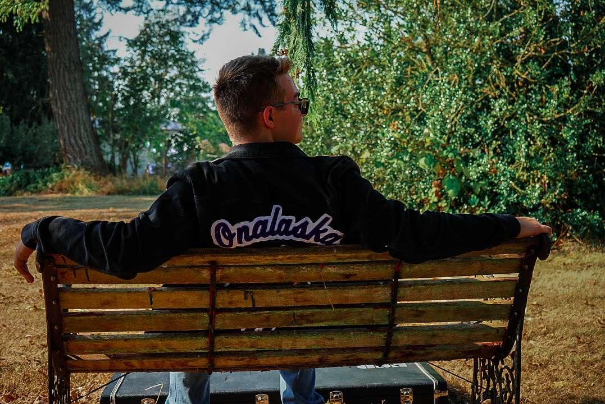

Assisted Project Coordinators with site inspections, drafting reports, and tracking construction progress. Enhanced documentation processes, leading to better team efficiency.
Provided academic support in Physics, fostering a deeper understanding of concepts among students. Helped students improve their problem-solving skills and critical thinking abilities.
Ensured high customer satisfaction in a fast-paced dining environment. Demonstrated teamwork and time management skills during peak hours.
Led safety inspections and maintained compliance with safety regulations. Proactively managed risks to maintain a safe working environment.
